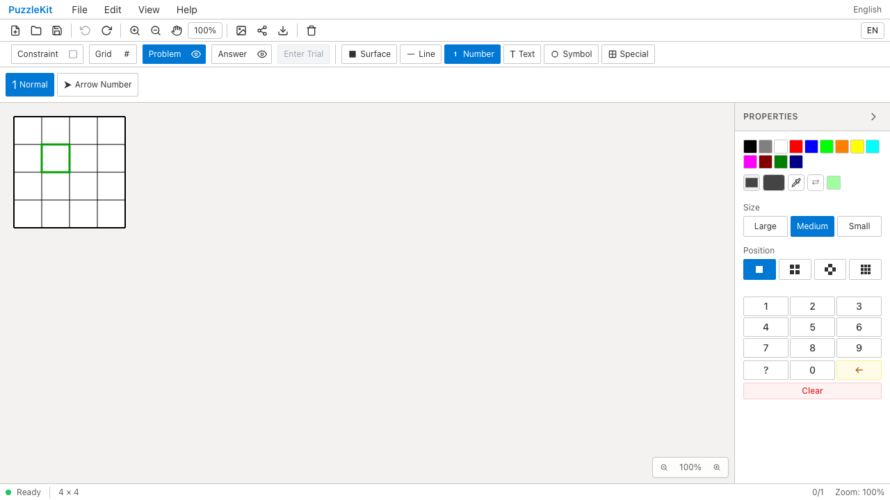
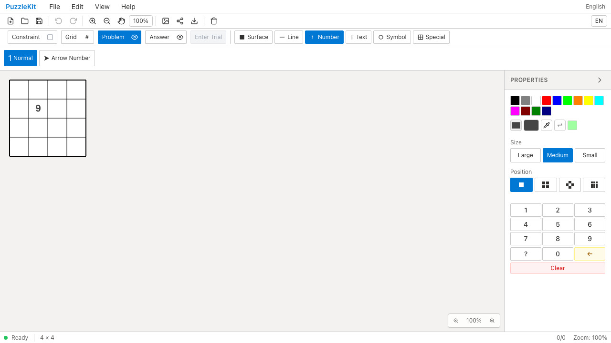
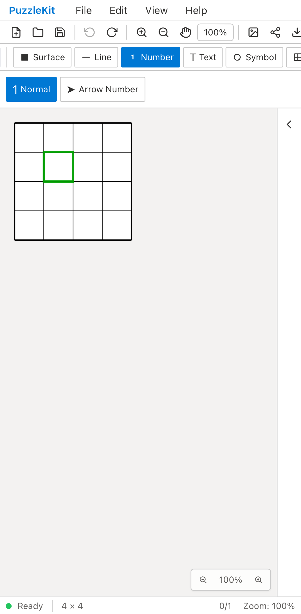
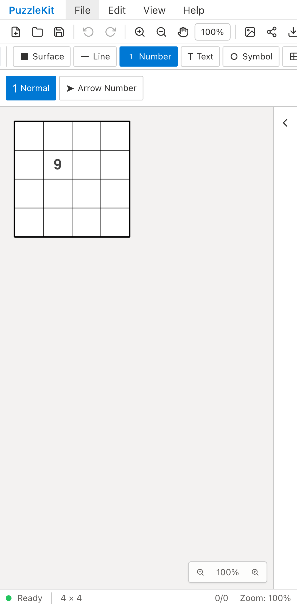
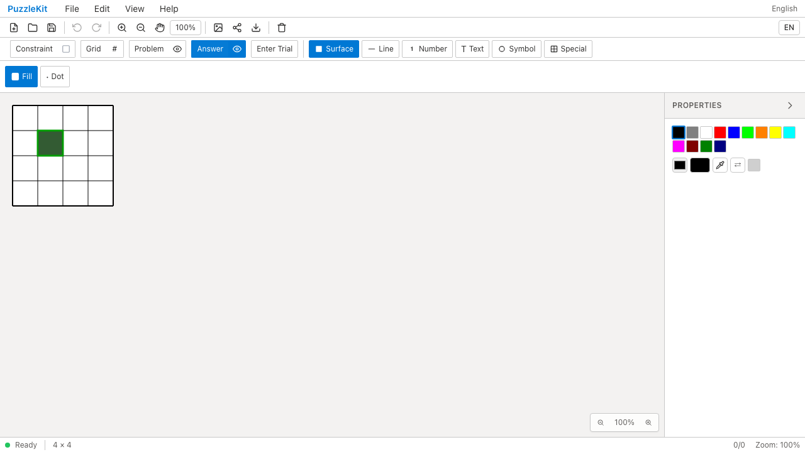
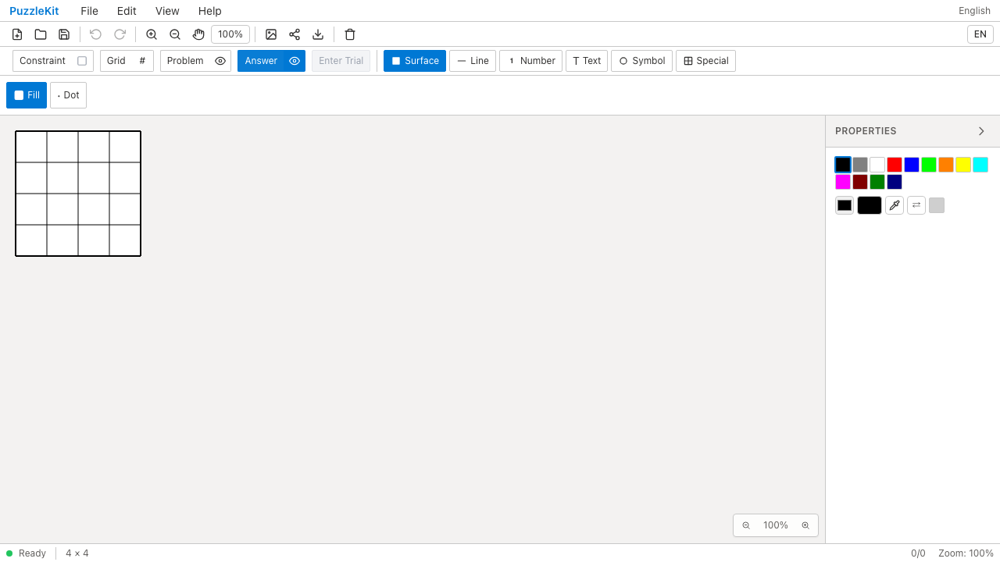
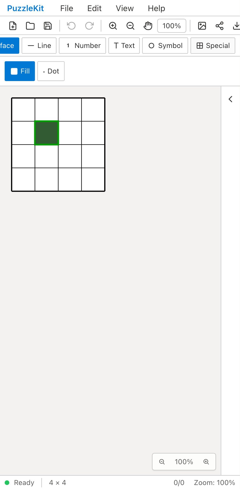
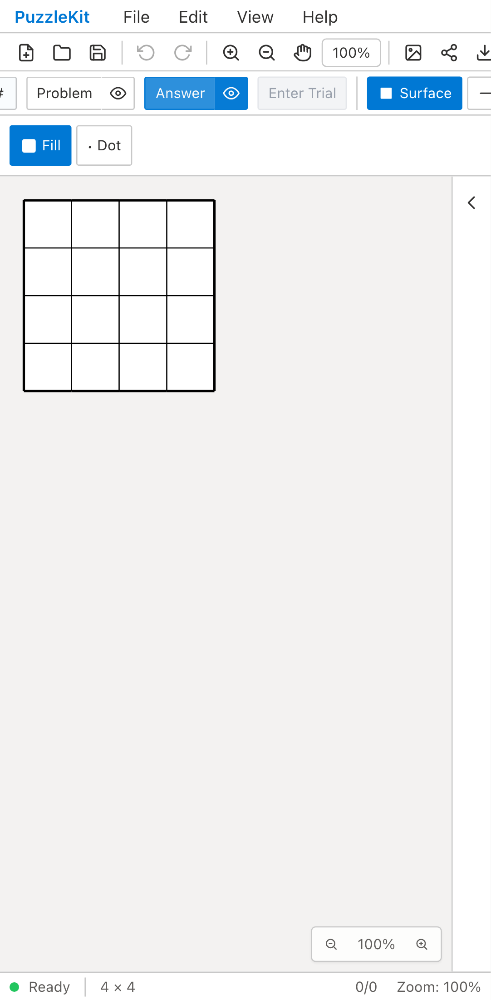

Before: develop 8888273 / After: b8086e8。production build、Playwright Chromium。
File/Open: Beforeは旧Undoで読み込んだ9が消える。Afterは旧Undoを実行できず、9が残る。
New: BeforeはTrialのRejectで旧解答が戻る。AfterはTrialを終了し、新しい盤面を空のまま保つ。







